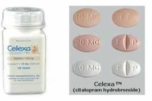

< < < Back
Never Date A Woman Who Takes One Of These Prescription Drugs – Return Of Kings
One out of every four—that’s how many women in America are on some type of antidepressant. How many of the remaining 75 percent should be on meds, but aren’t for any number of reasons, is anyone’s guess. Judging by how crazy and delusional most women are nowadays, it’s probably a pretty sizable percentage. Especially for women under the age of 30.
What’s more: a recent study out of Canada reveals that pregnant women taking the most common form of antidepressants—Selective Serotonin Reuptake Inhibitors, or SSRIs—increase their risk of having a child born on the autism spectrum by 87 percent. Eighty-seven percent! To say that is completely ridiculous would be a massive understatement. One would like to think these women feel ashamed of themselves for producing an entire generation of little “Rain Mans,” but they’re most likely too drugged up feel anything at all—never mind shame.
It’s scary as hell out there, gentlemen. Even scarier is the fact that a lot of the women taking these drugs seem to have their acts together. I mean, we all expect the 250 pound piece of shit with the weird hair, Tumblr account, and see-through earlobes who breathes like a dehydrated Saint Bernard whenever she traverses a Golden Corral parking lot to be on antidepressants—it’s a given. She’s an unlovable loser who has no friends and no prospects. This article won’t focus on women like this at all because nobody wants to fuck them, talk about them, talk to them, look at them, or even think about them.
The sole focus of this article will be on the stealth losers: the women who are generally attractive, successful, and have everything that feminism says should make them happy, yet are miserable to the point that they have to pop pills like a high school kid pops zits just to stay sane.
If you haven’t dated a woman like this yet, then it’s only a matter of time before you stumble upon one. They’re very common, and it’s important as a single man entering 2016 to have—at a minimum—a rudimentary understanding of the crap these women are putting into their systems just to appear normal and make it through the day. But first, let’s start with a few target rich locations for gathering your intelligence.
The Obvious Choice: The Medicine Cabinet
When you’re at a woman’s place on your first or second visit, excuse yourself to the bathroom and take a look around her medicine cabinet. If you’re a pussy and you’re saying to yourself, “I would never disrespect someone’s privacy like that!” then you need to adjust your attitude. Women aren’t in the business of helping you, they’re in the business helping themselves.They’re not going to give you the answers. Crazy women don’t think they’re crazy, sluts don’t think they’re slutty, and losers don’t think they’re losing—it’s on you to figure all of that out on your own and act accordingly.
You’re never going to hear a woman say: “I would make a terrible girlfriend and an even worse wife or mother: you should avoid me like a fresh pile of dog shit because I’m going to make your life completely miserable if you get serious with me.” Candor is not in a woman’s best interests, so you should never expect it.
And this is why you should view snooping around as your privilege. If a woman has worked her way into your life in some capacity, then you owe it to yourself to find out absolutely everything you can about her. That means if the opportunity presents itself, you should always take a peak at her personal effects: phone, laptop, tablet, purse, closet—whatever. Nothing is off limits when it comes to your pursuit of the truth, and a woman’s medicine cabinet is no exception. It is your responsibility to find out who she really is as a person, not who she wants you to believe she is. If that means you have to play Sherlock Holmes, then so fucking be it.
Naturally, women aren’t going to be very pleased or impressed if they catch you playing amateur DEA agent. “Why don’t you trust me you fucking jerk?!” said the pill popping psycho who’s hellbent on keeping her issues a secret from you. Because unless her name is “Mom,” then her ass isn’t to be trusted, that’s why. On the rare occasions when I’ve been busted snooping around, and a woman has asked me why I don’t trust her, I’ve always answered nonchalantly with, “Because you’re not trustworthy,” while sporting a dismissive grin coupled with a zero-fucks-given shoulder shrug.
Women say they value honesty, so in this situation, I give it to them (what I’m really giving them is maximum drama). And surprisingly enough, despite being offended and losing their shit, they’ve never “dumped” for me for my actions. Sure, they huffed and puffed and said a bunch of nonsense, but they eventually calmed down and asked what they can do to earn my trust.
If you handle things properly, and can talk your way out of a jam using humor and playing to a woman’s emotions, then you don’t have anything to worry about. With that said: look in the bitch’s medicine cabinet and search for drugs. To hell with what she thinks of it and never apologize if you get caught.
Nightstands And Dresser Drawers
I’ve found just as many prescription bottles in nightstands as I have in medicine cabinets. A lot of these losers start popping pills before they take their morning piss; it’s the first thing they do when they wake up. So for convenience purposes, a woman might keep her drugs close to her bed. The best time to get down to business and start gathering your intel is when she’s taking a shower or cleaning up after sex.
Purses And Handbags
You’ll need a little bit of time to inspect these items—at least five to ten minutes—so make sure your girl is side-tracked or busy doing something when you go snooping around. A lot of women will keep a “universal” pill bottle in their purses. At first glance, it will appear to be an innocuous over-the-counter container for something like Ibuprofin or Midol. But contained within will be a miniature CVS with everything from heavy hitting pain killers and anti-psychotic meds to birth control pills or vitamins. You should also look for written Rx forms for refills in her wallet or stuffed in the various hidden pockets of her purse.
Glove Compartments And Center Consoles
You would be surprised by how many Ziploc baggies full of pills women keep hidden in their cars. Most women are scatter-brained (especially druggies), and as a consequence they will keep a small supply of meds stashed away in their cars as a back-up just in case they forget to take them at home.
If you’re out and about with a woman while she’s running some errands, simply wait in her car while she heads into a store, and then begin your investigation. Since these medications won’t be labeled in most cases, you’ll need to become familiar with what they look like.
Without further delay, here are ten common drugs women take that should be a huge red flag when it comes to dating them…
1. Cymbalta (Duloxetine)
Cymbalta was the number one prescribed antidepressant in 2014, and continues to be one of the most prescribed in America. It is used to treat depression, anxiety, and the biggest bullshit medical condition in history—fibromyalgia.
The pill itself is easy enough to spot, with the name “Lilly” prominently displayed in white lettering on a blue background. This name was most likely chosen to pay homage to the Hebrew demoness “Lilith”; which translated into English means “night hag,” or “monster of the night,” and is therefore a perfect description for the type of wacko bitch who ends up taking Cymbalta.
2. Lexapro (Escitalopram)
Out of all the antidepressants I’ve personally seen women take, Lexapro has been the most common. It is used to treat general anxiety and depression. The pill itself is small and rather unassuming in appearance: one side is marked with the letters “FL,” while the other contains the dosage information in milligrams.
I don’t know what “FL” means, but if I had to guess, I would say it most likely stands for “Fucked-up Life,” because that’s exactly the kind of life every woman taking Lexapro has. (In all seriousness, “FL stands for Forest Laboratories—the makers of Lexapro)
3. Prozac (Fluoxetine)
Another very popular choice among the batshit crazy ho-bags of America is Prozac. It is used to treat a myriad of afflictions ranging from depression and obsessive compulsive disorder (OCD), to bulimia and anorexia. The pills are very easy to spot: they are green and white with “Prozac” prominently displayed along with the corresponding milligram dosage (typically 20mg).
4. Xanax (Alprazolam)
If a drug features the letter “X” multiple times, then you know it’s some pretty potent shit. Xanax is a sedative that is used to treat panic attacks and other anxiety related issues. Washing down “Zannies” with a nice tall glass of cheap pinot grigio is one of the modern American woman’s favorite pastimes, so keep your eyes peeled for the signature “Xanax bar” while conducting your snooping missions.
The pills, as you can see in the above photo, typically come in 1/4 sections that can be split-off if necessary, hence the term “bar.” In most cases, the pills are white with “Xanax” displayed on one side, and the dosage on the other. They are very distinctive and easy to identify.
5. Paxil (Paroxetine)
Paxil is another very common SSRI that is used to treat depression, anxiety, and OCD. The pills themselves are very easy to recognize: they are color coded by their milligram content, thus making it easy to judge just how crazy the bitch is at a glance, which is convenient. “Paxil” is also clearly marked on the tablet.
6. Zoloft (Sertraline)
A fan favorite amongst the mentally ill crowd, Zoloft is designed to treat OCD, PTSD, and every man’s favorite—Premenstrual Dysphoric Disorder (PMDD). For the unfamiliar, PMDD is PMS on steroids. If you’ve ever dated a woman who turns into an insufferable asshole when she’s on her period, then just wait until you come across one with this PMDD nonsense. Per WebMD, here’s the list of things you get to look forward to when you encounter such a woman:
- Mood swings
- Depressed mood or feelings of hopelessness
- Marked anger, increased interpersonal conflicts
- Tension and anxiety
- Irritability
- Decreased interest in usual activities
- Difficulty concentrating
- Fatigue
- Change in appetite
- Feeling out of control or overwhelmed
- Sleep problems
- Physical problems, such as bloating, breast tenderness, swelling, headaches, joint or muscle pain.
- Being a cunt
That’s sounds like lot of bullshit to put up with just for some pussy, doesn’t it? I thought so, too. So whenever you see that little sky blue, light green, or off-white colored pill with “Zoloft” displayed on it—run.
7. Effexor XR (Venlafaxine)
Effexor, as opposed to SSRI medications like Lexapro or Paxil, is in the Serotonin-norepinephrine Reuptake Inhibitor (SNRI) family (Cymbalta is in this group as well). This means that instead of affecting only the serotonin receptors like a typical SSRI, it targets the norepinephrine receptors as well. In other words, the women who take it are losers.
It’s commonly prescribed to treat major depression, panic attacks, and general anxiety issues when typical SSRIs aren’t enough to get the job done. The capsules themselves are easy to recognize—the lower dosage pills (75mg) are white with red lettering, while the higher dosage ones (150mg) are red with white lettering. A large “W” along with “Effexor” are clearly marked on each capsule as well.
8. Abilify (Aripiprazole)
This one is a heavy hitter: it is used to treat bi-polar disorder, schizophrenia, and major clinical depression. Additionally, in an attempt to reign in the craziest of bitches, Abilify is typically prescribed in conjunction with other SSRIs and SNRIs to create the proverbial antidepressant “chemical cocktail.” So if you spot Abilify tablets during your investigative work, then be on the lookout for the other drugs on this list as well. Simply put: think of Abilify as Robin—because Batman probably won’t be too far away.
The pills themselves can be a bit tricky to identify, though. Much like the numerous cocks the average Abilify user has taken, the pills come in a variety of colors, shapes, and sizes. But there is a saving grace: the distinctive “00–” engraved into the pills. Make Ian Fleming proud: think of James Bond when you’re performing your clandestine drug hunts as a helpful reminder.
9. Celexa (Citalopram Hydrobromide)

Most likely named after a syphilitic stripper who took part in the drug’s initial trial phases, Celexa is an antidepressant that is used to treat major depressive episodes and panic disorders. The pills are very basic looking, and blend in easily with other medications, so make sure to keep an eye out for letters “FP” when conducting your searches.
As a little reminder, think of “FP” as standing for “Fucking Police,” because that’s exactly who will be showing up on your doorstep if your Celexa-popping psycho girlfriend gets pissed-off at you for some reason.
10. Lithane, Lithobid, or Eskalith (Lithium Carbonate)
Last, but certainly not least, is our good old buddy Lithium. Keeping bi-polar skanks somewhat tolerable since 1948, Lithium works by decreasing norepinephrine release and increasing serotonin synthesis, and is often prescribed when other antidepressants fail to yield positive results. Lithium users and male feminists talking to women they find attractive can expect the same common side effects: increased urination, shakiness of the hands, and increased thirst.
Out of all the drugs listed here, Lithium is the most difficult to identify. The pills may or may not be labeled, and can come in tablet, capsule, or caplet form. If you have difficulty figuring out what a particular pill is being used to treat based off web searches, then steal one and take it down to your local pharmacy. Show the pill to the pharmacist and say: “I found this in my ‘daughter’s’ (niece’s, nephew’s, cousin’s–whatever) room and I have no idea what it is. I know she isn’t on any prescribed medications, and I’m worried about what she is putting into her body. Can you help me out?” He or she should be able to give you an answer.
Exit Strategy
These pill popping broads are not to be taken seriously in any way, shape, or form—they’re losers. And what do losers do? They fucking lose, and they’ll bring your ass along for the ride if you let them. Just because these women get their drugs from a pharmacist, and not some low-life drug dealer working a street corner, doesn’t mean their issues have legitimacy.
Doctors write out bullshit antidepressant scripts to whiny women every single day, so don’t get suckered in by a woman’s sob stories about her “mental issues” or her oh-so difficult life. Women create their own problems due to their inherent impetuous nature, their severely lacking logical reasoning skills, their inability to understand cause and effect, and their refusal to accept responsibility for their actions—they bring this shit on themselves. They are not to be pitied, they are to be avoided.
Granted, avoiding these basket cases can be difficult since the sex is usually phenomenal—nothing fucks better than crazy, after all. But women have the bad habit of turning their problems into your problems, and if you’re with a woman who looks to drugs whenever the going gets tough, then it will only be a matter of time before you’re saddled with a shit-ton of somebody else’s problems. That’s no way to live. Just remember that your future well-being is more important than busting a good nut, and pull the rip cord at the first sign of trouble.
In Closing
We’ve been told that women have never been better; that they are the strongest and most empowered in human history. We’ve been told that they can “do it all,” while they’ve been told that they can “have it all.” We’ve been told that we have the best women the world has ever produced; that we’re surrounded by a group of pipe-swinging bad-ass bitches who make tons of money, raise great children, and maintain tip-top homes.
Everyday, the media reminds us of these “superwomen,” and they’ll remind us of it again tomorrow. We’re told that these almighty goddesses should be celebrated, and that we should feel privileged to share the earth them.
But what did we get in reality? Well, sadly, what we got is what we have: a bunch of drugged up flunkies who can’t even organize a healthy morning shit, never mind organize their own lives or the lives of anyone else. We are a generation of men that has been completely misled, ripped off, and screwed over—and there are no refunds. All we can do is keep trudging through the wasteland, and hope for the best.
It’s only going to get worse, so stay safe out there, gentlemen.
Read More: Why You Should Avoid Women Who Complain About Their Health